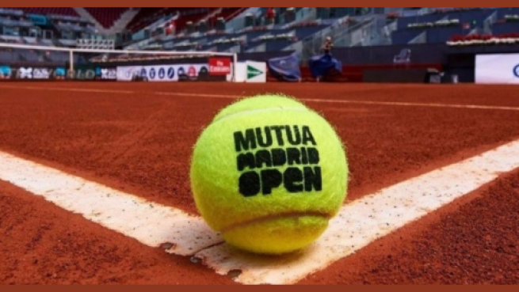
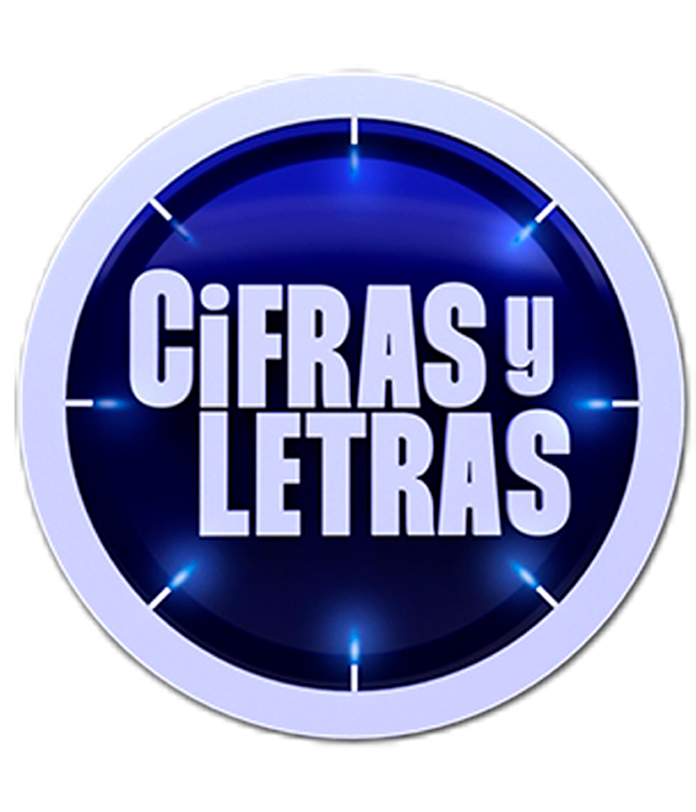
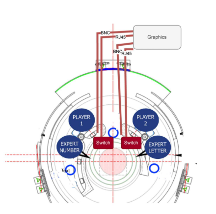
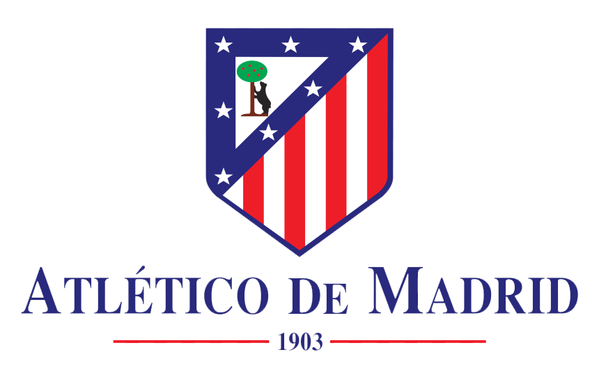
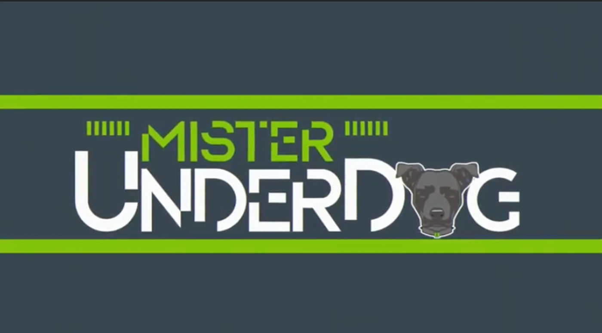
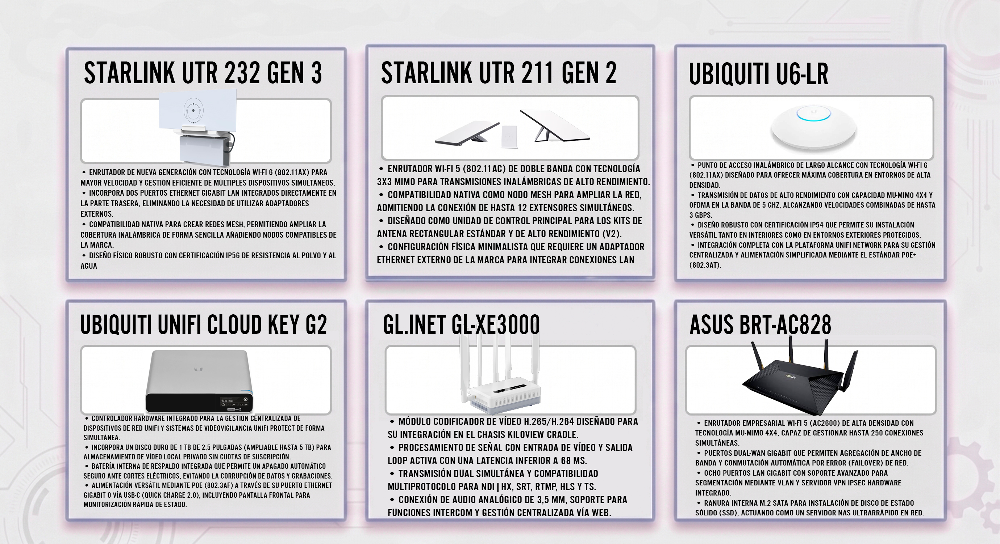

Jefe técnico de emisión de streaming para la gala de inauguración. Gestión del embebido de la señal de vídeo principal (main) y de respaldo (backup) para garantizar la continuidad ininterrumpida del directo.
Coordinador de señales de streaming durante la campaña electoral. Responsable de la ingesta, gestión y distribución técnica de los flujos de vídeo en directo hacia medios de comunicación y plataformas oficiales.
Responsable de la arquitectura y distribución de la señal de vídeo hacia múltiples plataformas de forma simultánea.



Técnico a cargo de la distribución de streaming en directo para este espacio de debate deportivo. Diseño y supervisión del flujo de red para asegurar la entrega de la señal audiovisual en múltiples canales simultáneamente.

